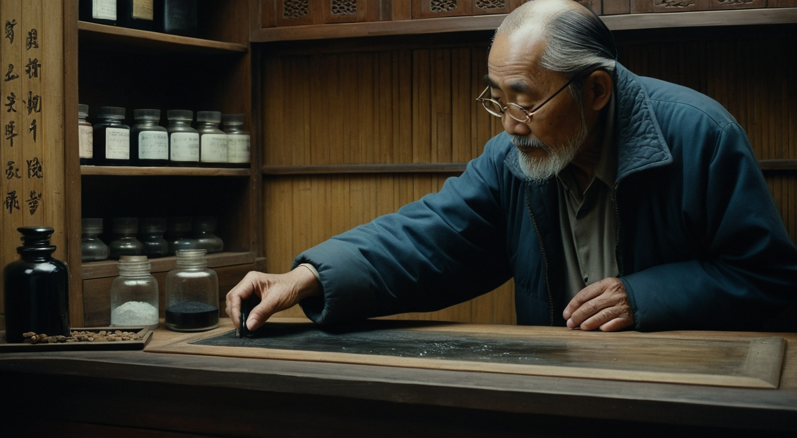

新能力演示 · 一致性升级前后对比
演示素材全部取自 demo_novel.txt 里《青囊异闻录》的原文，链路为：取原文段落 → 写分镜(nar/lines) → 出关键帧 → 图生视频 → 合成 → 按角色配音。出图开关：--cast --style --neg base,face（角色锚定 + 全片风格 + 分档负面词）。每支成片都提供带字幕与无字幕两种版本，无字幕版撤掉所有屏显文字、只留声音与画面。
① 最新出片：《铃兰令》· 取自小说原文
配音版（含字幕）：上行灰白字是旁白（只上屏、不朗读），下行暖黄字是正在念的台词。
你要的 · 无字幕版同一支配音，画面不带任何字幕
无字幕配音版：适合做"干净"的成片，声音与画面完全一致，只是不显示台词字幕。
301 铜铃落柜：手一枚青铜药铃按在柜上，单一油灯暖光，镜头缓推向铜铃。

302 铃兰令：老者猛然抬头，水晶镜片里两簇火苗反光，目光陡然锐利。
原文取段demo_novel.txt 第 7–9 行真实 i2v无 ken_burns 降级
| 幕 | 原文依据 | 台词（配音） | 声线 |
|---|---|---|---|
| 301 铜铃落柜 | 「'抓一味世上没有的药。'叶玄机将一枚青铜药铃放在柜台上。铃声清越，油灯的火苗骤然一缩。」 | 叶玄机：「抓一味世上没有的药。」 | 博音男声 · 压抑 · 4 |
| 302 铃兰令 | 「老者终于抬起头，镜片后的目光陡然锐利如刀：'三十年了……终于有人拿着"铃兰令"走进我这间铺子。'」 | 掌柜：「三十年了……终于有人拿着铃兰令走进我这间铺子。」 | 儒雅男士 · 压抑 · 7 |
- 为什么选这段：这是原文里张力最强的转折，也是此前从未拍过的一段——铜铃、灯缩、抬眼三拍全部可视觉化。
- 道具入表：青铜药铃已登记进
assets/cast.json的 props，后续出图会自动带上锚点描述。 - 音轨实测：均值 -23.7 dB / 峰值 -5.5 dB，非静音轨；两幕渲染各约 13 分钟。
② 上一部：《残篇授书》· 双角色台词配音
配音版（含字幕）：上行灰白字是旁白（只上屏、不朗读），下行暖黄字是正在念的台词——nar/lines 分离约定在本片里同时可见、可听。
你要的 · 无字幕版同一支配音，画面不带任何字幕
无字幕配音版：声音与画面对齐完整，只是撤掉了台词与旁白的屏显字幕。
201 灯下授书：掌柜就着油灯把泛黄医书摊在柜台上，镜头缓推向书卷。
202 雨收出门：破晓，叶玄机抱着医书跨出门槛，镜头左移跟拍。
已配音台词 → TTS 朗读，按角色分声线202 降级wan5b 超时，该幕为 ken_burns 推拉
| 幕 | 旁白（只上屏） | 台词（配音） | 声线 |
|---|---|---|---|
| 201 灯下授书 | 老者从百眼药柜深处取出一卷泛黄的医书，就着灯摊在柜上。 | 掌柜：「这卷青囊残篇，我守了三十年。今日交给你。」 | 儒雅男士 · 释然 · 4 |
| 202 雨收出门 | 雨停时天已破晓，叶玄机抱着医书跨出门槛。 | 叶玄机：「掌柜的，我记下了。」 | 博音男声 · 平静 · 5 |
- 声线查表：角色 → 音色/情绪/强度全部来自
assets/cast.json，本片为 201/202 新增单镜覆写（掌柜"释然"、叶玄机"平静"），脚本里没有硬编码。 - 台词长于画面：自动冻结末帧补足（tpad），保证一句台词不被画面切掉。
- 音轨实测：均值 -25.6 dB / 峰值 -4.1 dB，非静音轨。
③ 首帧对比：同一场景，两种出图
旧出图（无锚定）：人物背影出镜——全片没有一张能锁定长相的脸；木格窗与灯笼阵更像和风布景，年代感穿帮；手无道具，医者身份无从谈起。

新出图（锚定+风格）：叶玄机正脸入镜——短黑发青年，怀抱竹制药箱（cast.json 角色锚点）；冷墨色调、灯笼暖黄为唯一暖源（胡金铨风格层）；雨水挂在肩头。
- 角色锚定：prompt 自动拼接 cast.json 的
look字段——年龄、发型、服饰、随身道具与人物小传一致。 - 风格层：全片统一注入
style_prompt，负面词同步叠加neon, cyberpunk, modern clothing拦截穿帮。 - 分档负面词：face 档追加
asymmetric eyes / melted face / duplicate face等，直击换脸级缺陷。
④ 成片对比：同一场景的视频渲染
旧渲染：远景背影推门，镜头信息量低，观众三秒内记不住人物。
新渲染：正面近景+药箱，首帧即建立角色识别；运镜为 push_in（镜头缓推）。
⑤ 全片对比：四幕正篇《雨夜药铺》
含字幕 · 台词配音16.03 秒 · 四幕全新渲染 · 已重配台词
配音版（含字幕）（2362KB）：旁白只上字幕不配音，人物台词按角色分配声线；画面四幕全部重渲，长相 / 服饰 / 色调跨幕一致。
你要的 · 无字幕配音版16.03 秒 · 同一支配音 · 画面不带字幕
无字幕配音版（2468KB）：声音与上面完全一致，只是撤掉了台词和旁白的屏显字幕。
无字幕 · 纯画面14.33 秒 · 无音轨
无字幕纯画面版（4470KB）：同样的四幕新画面，不配音也不上字幕，可看原始画面节奏（故比配音版短约 1.7 秒）。
| 幕 | 台词（人物配音） | 声线 |
|---|---|---|
| 001 雷雨叩门 | 叶玄机：「有人吗？雨太大了，借宿一晚。」 | 博音男声 · 平静 · 4 |
| 004 老灯研墨 | 掌柜：「这般时辰还赶路，年轻人，你命硬。」 | 儒雅男士 · 平静 · 5 |
| 008 镜片后的刀 | 掌柜：「你姓叶。」 | 儒雅男士 · 神秘 · 6 |
| 012 七分相似 | 叶玄机：「这图上的人……怎么这样像我？」 | 博音男声 · 平静 · 5 |
⑥ 工程层：这次演示同时验证的能力
| 能力 | 本片中的体现 |
|---|---|
| 确定性种子 | hashlib 派生 seed，同参数重跑首帧逐像素一致（旧实现 hash() 每进程漂移） |
| 断点续跑 | run_state.json 记录 12 个步骤的参数指纹，重跑自动跳过已完成步骤 |
| 覆盖前自动备份 | 旧首帧/旧成片均存 .bak（scene_001_final_before.mp4 即本次对比的"旧"素材） |
| faststart 流式播放 | moov 前置（ftyp→moov→mdat），页面内即可边下边播 |
| 提示词库 | camera 28 档 / 微表情 22 档 / 影调 21 档 / 负面词 10 档，vid prompt 全部出自词典 |
| 一键工作流 | scripts/flow.py：预检→渲染→配音→faststart→报告，一条命令跑完 |
| 成片名按号段推导 | scene_band() 分 200/300 号段；只有同一 band 才合并成片名，跨号段导出 _选段_001-301.mp4。另加写入前自动备份护栏 |
| 单幕显存回收 | 每幕开始前请求 ComfyUI 卸载上一幕驻留模型（vram_opt.free），防多幕连跑的碎片堆积 |
| 无字幕开关 | --nosub：合成与配音两条链均可撤掉所有屏显字幕，生成"干净"成片（本页 ①/②/⑤ 均附无字幕版） |